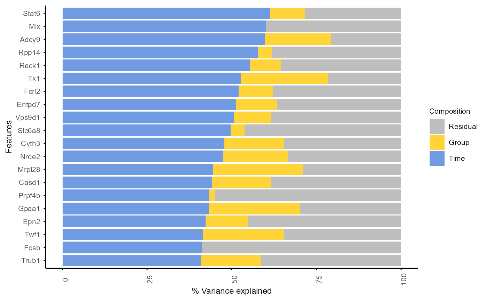

Variance decomposition by linear mixed models, to estimate
the contribution of different variables to the variance of each feature.
Modified from PALMO::lmeVariance() function.
Allow using original data or data normalised to time point 0
Arguments
- se_obj
A SummarizedExperiment object created by
create_input()- features
A vector of features (e.g. genes) to include in the analysis. If NULL, all features are used. (default is NULL)
- variables
Variables to be included in linear mixed model for variance analysis. (default is c("Group", "Time"))
- fixed_effect_var
Fixed effect variables to be included in linear mixed model, variance contribution obtained by adding them as random variables. (default is NULL)
- assay
1 for the original input data, or 2 for the data normalised to time point 0
- core
Number of cores to use for parallel processing (default is 2)
Examples
data("example")
example_obj <- normalise_to_start(example_obj)
var_decomp <- decomp_variance(example_obj, assay = 1)
#>
| | 0 % ~calculating
|+ | 1 % ~58s
|+ | 2 % ~30s
|++ | 3 % ~20s
|++ | 4 % ~15s
|+++ | 5 % ~12s
|+++ | 6 % ~10s
|++++ | 7 % ~09s
|++++ | 8 % ~08s
|+++++ | 9 % ~07s
|+++++ | 10% ~06s
|++++++ | 11% ~06s
|++++++ | 12% ~05s
|+++++++ | 13% ~05s
|+++++++ | 14% ~05s
|++++++++ | 15% ~04s
|++++++++ | 16% ~04s
|+++++++++ | 17% ~04s
|+++++++++ | 18% ~04s
|++++++++++ | 19% ~04s
|++++++++++ | 20% ~03s
|+++++++++++ | 21% ~03s
|+++++++++++ | 22% ~03s
|++++++++++++ | 23% ~03s
|++++++++++++ | 24% ~03s
|+++++++++++++ | 25% ~03s
|+++++++++++++ | 26% ~03s
|++++++++++++++ | 27% ~03s
|++++++++++++++ | 28% ~02s
|+++++++++++++++ | 29% ~02s
|+++++++++++++++ | 30% ~02s
|++++++++++++++++ | 31% ~02s
|++++++++++++++++ | 32% ~02s
|+++++++++++++++++ | 33% ~02s
|+++++++++++++++++ | 34% ~02s
|++++++++++++++++++ | 35% ~02s
|++++++++++++++++++ | 36% ~02s
|+++++++++++++++++++ | 37% ~02s
|+++++++++++++++++++ | 38% ~02s
|++++++++++++++++++++ | 39% ~02s
|++++++++++++++++++++ | 40% ~02s
|+++++++++++++++++++++ | 41% ~02s
|+++++++++++++++++++++ | 42% ~02s
|++++++++++++++++++++++ | 43% ~02s
|++++++++++++++++++++++ | 44% ~01s
|+++++++++++++++++++++++ | 45% ~01s
|+++++++++++++++++++++++ | 46% ~01s
|++++++++++++++++++++++++ | 47% ~01s
|++++++++++++++++++++++++ | 48% ~01s
|+++++++++++++++++++++++++ | 49% ~01s
|+++++++++++++++++++++++++ | 50% ~01s
|++++++++++++++++++++++++++ | 51% ~01s
|++++++++++++++++++++++++++ | 52% ~01s
|+++++++++++++++++++++++++++ | 53% ~01s
|+++++++++++++++++++++++++++ | 54% ~01s
|++++++++++++++++++++++++++++ | 55% ~01s
|++++++++++++++++++++++++++++ | 56% ~01s
|+++++++++++++++++++++++++++++ | 57% ~01s
|+++++++++++++++++++++++++++++ | 58% ~01s
|++++++++++++++++++++++++++++++ | 59% ~01s
|++++++++++++++++++++++++++++++ | 60% ~01s
|+++++++++++++++++++++++++++++++ | 61% ~01s
|+++++++++++++++++++++++++++++++ | 62% ~01s
|++++++++++++++++++++++++++++++++ | 63% ~01s
|++++++++++++++++++++++++++++++++ | 64% ~01s
|+++++++++++++++++++++++++++++++++ | 65% ~01s
|+++++++++++++++++++++++++++++++++ | 66% ~01s
|++++++++++++++++++++++++++++++++++ | 67% ~01s
|++++++++++++++++++++++++++++++++++ | 68% ~01s
|+++++++++++++++++++++++++++++++++++ | 69% ~01s
|+++++++++++++++++++++++++++++++++++ | 70% ~01s
|++++++++++++++++++++++++++++++++++++ | 71% ~01s
|++++++++++++++++++++++++++++++++++++ | 72% ~01s
|+++++++++++++++++++++++++++++++++++++ | 73% ~01s
|+++++++++++++++++++++++++++++++++++++ | 74% ~01s
|++++++++++++++++++++++++++++++++++++++ | 75% ~01s
|++++++++++++++++++++++++++++++++++++++ | 76% ~01s
|+++++++++++++++++++++++++++++++++++++++ | 77% ~00s
|+++++++++++++++++++++++++++++++++++++++ | 78% ~00s
|++++++++++++++++++++++++++++++++++++++++ | 79% ~00s
|++++++++++++++++++++++++++++++++++++++++ | 80% ~00s
|+++++++++++++++++++++++++++++++++++++++++ | 81% ~00s
|+++++++++++++++++++++++++++++++++++++++++ | 82% ~00s
|++++++++++++++++++++++++++++++++++++++++++ | 83% ~00s
|++++++++++++++++++++++++++++++++++++++++++ | 84% ~00s
|+++++++++++++++++++++++++++++++++++++++++++ | 85% ~00s
|+++++++++++++++++++++++++++++++++++++++++++ | 86% ~00s
|++++++++++++++++++++++++++++++++++++++++++++ | 87% ~00s
|++++++++++++++++++++++++++++++++++++++++++++ | 88% ~00s
|+++++++++++++++++++++++++++++++++++++++++++++ | 89% ~00s
|+++++++++++++++++++++++++++++++++++++++++++++ | 90% ~00s
|++++++++++++++++++++++++++++++++++++++++++++++ | 91% ~00s
|++++++++++++++++++++++++++++++++++++++++++++++ | 92% ~00s
|+++++++++++++++++++++++++++++++++++++++++++++++ | 93% ~00s
|+++++++++++++++++++++++++++++++++++++++++++++++ | 94% ~00s
|++++++++++++++++++++++++++++++++++++++++++++++++ | 95% ~00s
|++++++++++++++++++++++++++++++++++++++++++++++++ | 96% ~00s
|+++++++++++++++++++++++++++++++++++++++++++++++++ | 97% ~00s
|+++++++++++++++++++++++++++++++++++++++++++++++++ | 98% ~00s
|++++++++++++++++++++++++++++++++++++++++++++++++++| 99% ~00s
|++++++++++++++++++++++++++++++++++++++++++++++++++| 100% elapsed=02s
plot_variance(var_decomp, rank = "Time", top_n = 20)
#> Features not specified. Plotting top 20 features ranked by Time.
